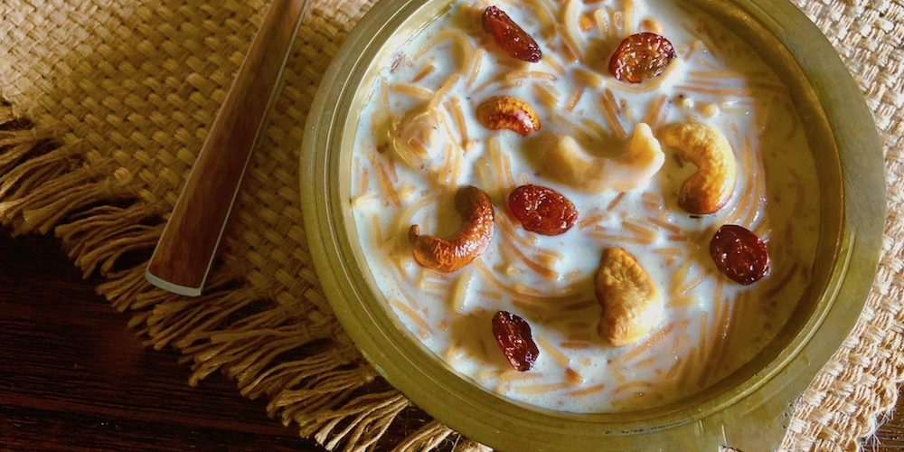
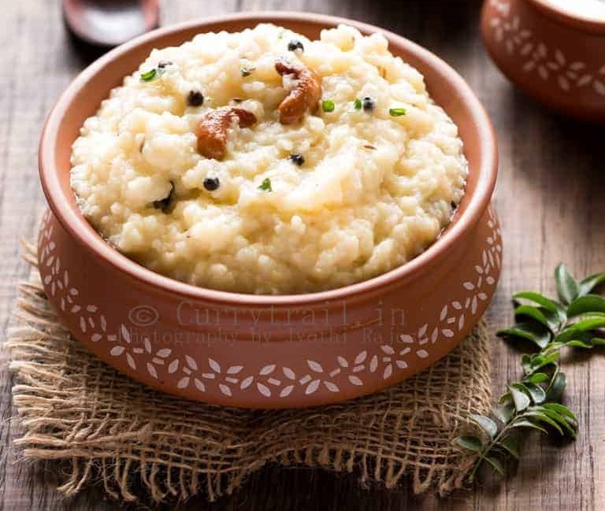

Payasam
A traditional South Indian dessert made with milk, rice, sugar, and flavored with cardamom, saffron, and topped with nuts and raisins.A traditional South Indian dessert made with milk, rice, sugar, and flavored with cardamom, saffron, and topped with nuts and raisins.

A fragrant rice dish made with basmati rice, marinated meat (usually chicken or mutton), and a blend of spices. It is known for its unique cooking method, called the "dum" technique.

Pongal
A popular rice dish made with rice and moong dal, cooked with black pepper, cumin seeds, ghee, and cashews. There are variations like Ven Pongal (savory) and Sakkarai Pongal (sweet).